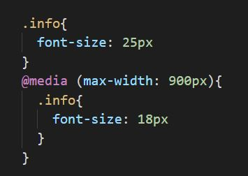

Responsive Layout
Responsive Layout beschreibt die optimierte Darstellung von Inhalten einer Website für alle Endgeräte (Smartphone, Tablet, PC). Da heute mehr Menschen über ihr Smartphone oder Tablet ins Internet gehen als am PC, ist ein responsive Layout für jede Website ein MUSS. Andernfalls wird auf allen Geräten die gleiche Website angezeigt, was auf dem Smartphone zu einer winzigen Schrift und teilweise verschobenen Inhalten führt.
Mit sogenannten media-queries kann man Inhalte für jede Bildschirmgröße anpassen. In diesem Beispiel wird die Schriftgröße ab einer Bildschirmgröße von 901px von 18px auf 25px erhöht.
